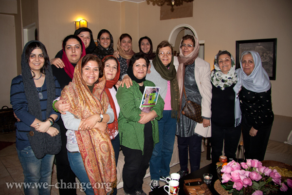
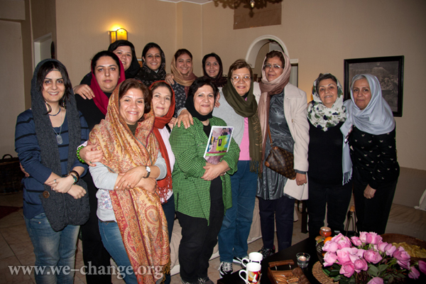

|
|

رنگ هایی از شادی و دوستی و لبخندهایی که شکست ناپذیرند... در دیدار مادران، دوستان و یاران با عالیه اقدام دوست
يكشنبه18 دی 1390
تغییر برای برابری

|
رنگ هایی از شادی و دوستی و لبخندهایی که شکست ناپذیرند... در دیدار مادران، دوستان و یاران با عالیه اقدام دوستيكشنبه18 دی 1390 تغییر برای برابری 
|